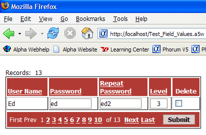
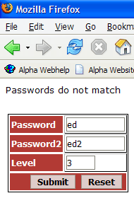
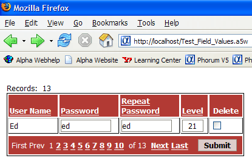
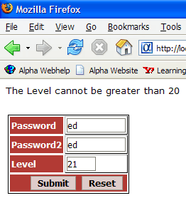

Responding to User Input on a Grid
 Note : This example describes a technique that was necessary before grid components supported validation of user input.
Note : This example describes a technique that was necessary before grid components supported validation of user input.
In this example, the grid:
does not access new records
has a single editable row
Creating the Test_Field_Values Grid Component
Create a new grid component.
On the Component Type page select Updateable.
On the Grid > Data Source menu select Alpha Five .dbf Tables.
On the Grid > Query (DBF) menu select "user_names" in the Table name list.
Click Calculated Fields, enter Password2 = Password and click OK.
Display the Grid > Fields menu.
Select "User_Name", "Password", "Password2", and "Level" in the Available Fields list and click
 .
.Move "Level" to the bottom of the Selected Fields list.
Change the Column Properties > Column heading value of the Password2 field to Repeat<br>Password.
Set the Column Properties > Heading in-line style values of all four fields to text-align: left; vertical-align: bottom;.
Display the Grid > Properties menu.
Set the Layout Options > Rows of data value to 1.
Display the Grid Update Settings page.
Select "False" in the Permissions > Allow insert list (de-select the check box).
Click File > Save As, enter Test_Field_Values, and click Save.
Creating the Test_Field_Values Page
Display the Web Project Control Panel.
Click New > Alpha Five Web Page (A5W) > OK.
Click File > Save As, enter Test_Field_Values, and click Save.
Click Insert Component > Select, select the Test_Field_Values grid, and click OK.
Display the Source tab of the HTML Editor.
Enter the following code after the <head> tag.
<%a5 if eval_valid("Test_Field_Valu_Button_Submit") then if (v.r1.password <> v.r1.password2) .or. (val(v.r1.level) < 0) .or. (val(v.r1.level) > 20) then response.redirect("error_page.a5w?password="+v.r1.password+"&password2="+v.r1.password2+"&level="+v.r1.level) end end if end if %> |
 Note : The variable name Test_Field_Valu_Button_Submit is a combination of the value defined for the componentName variable and _Button_Submit.
Note : The variable name Test_Field_Valu_Button_Submit is a combination of the value defined for the componentName variable and _Button_Submit.
The values that the script is testing are v.r1.password, v.r1.password2,and v.r1.level. The "v.r1." prefix indicates that the values are coming from the first row of the grid. If the values are not satisfactory, the page uses RESPONSE.REDIRECT()) method to display error_page.a5w. The URL passes the value of the variables so the receiving page can display them.
The values that the script is testing are v.r1.password, v.r1.password2,and v.r1.level. The "v.r1." prefix indicates that the values are coming from the first row of the grid. If the values are not satisfactory, the page uses RESPONSE.REDIRECT() method to display error_page.a5w. The URL passes the value of the variables so the receiving page can display them.
response.redirect("error_page.a5w?password="+v.r1.password+"&password2="+v.r1.password2+"&level="+v.r1.level) |
Creating the Show_Field_Values Dialog Component
Display the Web Project Control Panel.
Click New > Alpha Five Web Component > Dialog > OK.
On the Form > Controls menu add 3 Textboxes to the dialog.
Click File > Save As, enter Show_Field_Values, and click Save.
Creating the Error_Page Page
Display the Web Project Control Panel.
Click New > Alpha Five Web Page (A5W) > OK.
Click File > Save As, enter Error_Page, and click Save.
Click Insert Component > Select, select the Show_Field_Values dialog, and click OK.
Display the Source tab of the HTML Editor.
Enter the following code after the <body> tag.
<p><font face=Verdana> <%a5 if (password <> password2) then ? "Passwords do not match" end if if (val(level) < 0) then ? "The Level cannot be negative" end if if (val(level) > 20) then ? "The Level cannot be greater than 20" end if %> </p></font> |
Displaying the Pages
Display the Web Project Control Panel.
Display the A5W Pages tab.
Right select the "Error_page" entry and click Publish (Local Webroot).
Right select the "Test_Field_Values" entry and click Publish (Local Webroot) and open.
After entering two passwords that do not match and clicking Submit, the following screens appear.


After entering a value for Level that is greater than 20, the following screens appear.


See Also